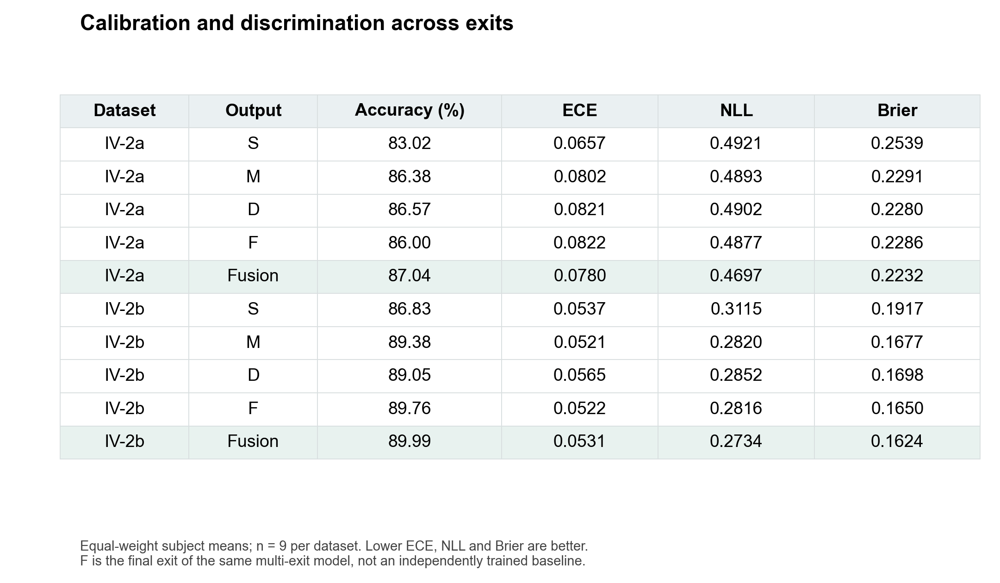
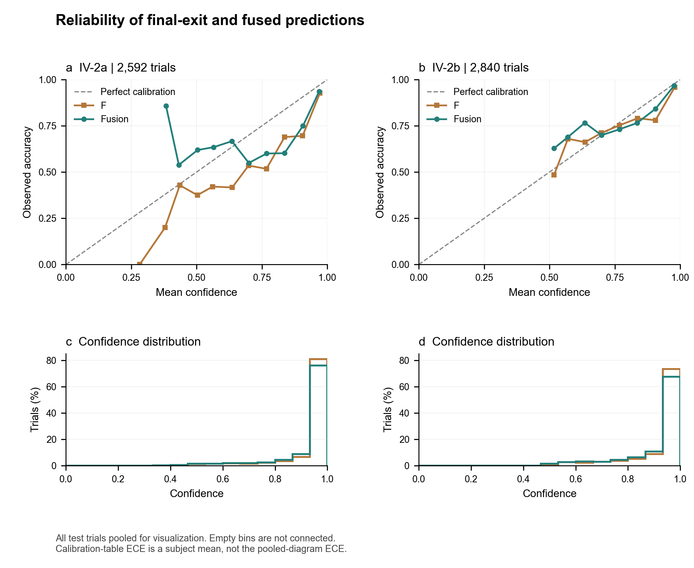
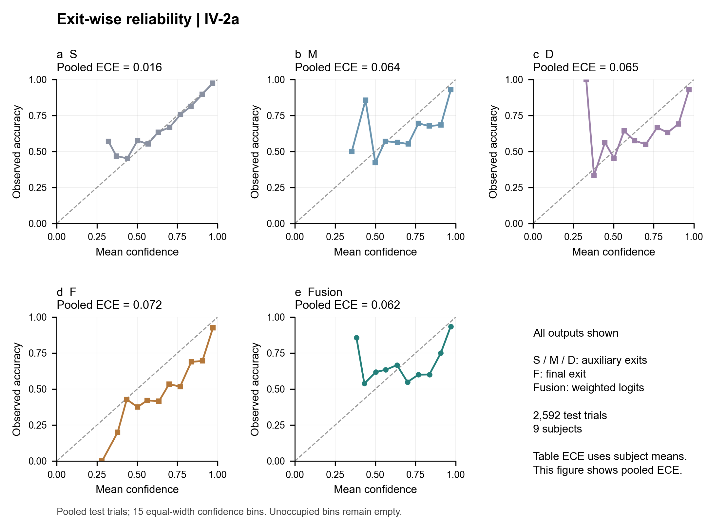
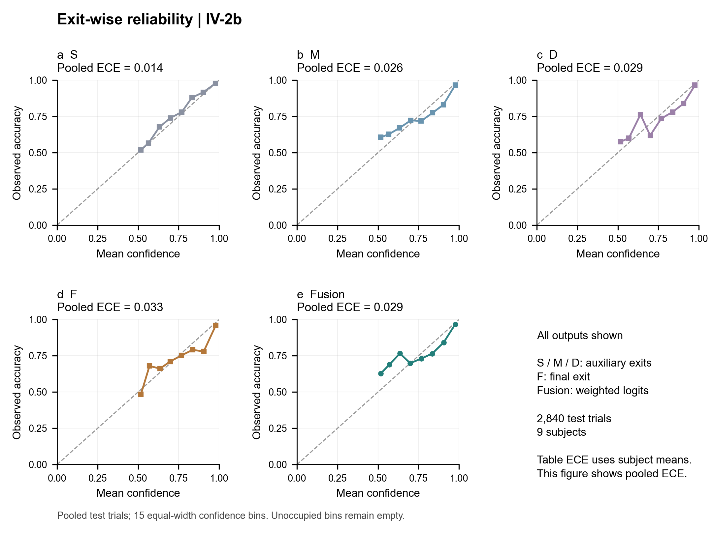
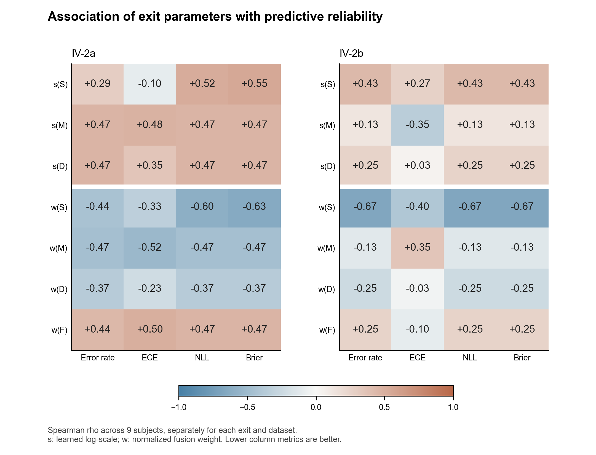
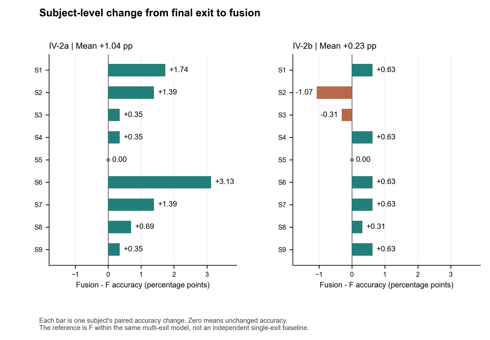
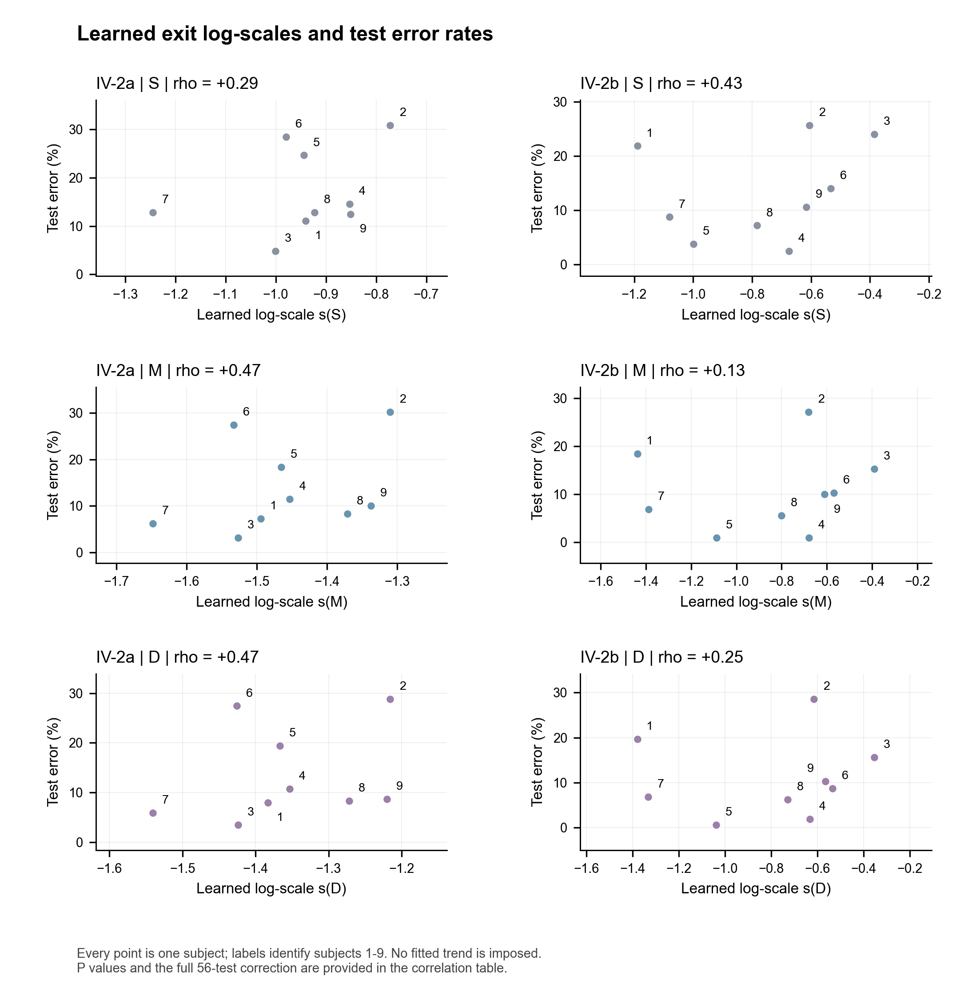
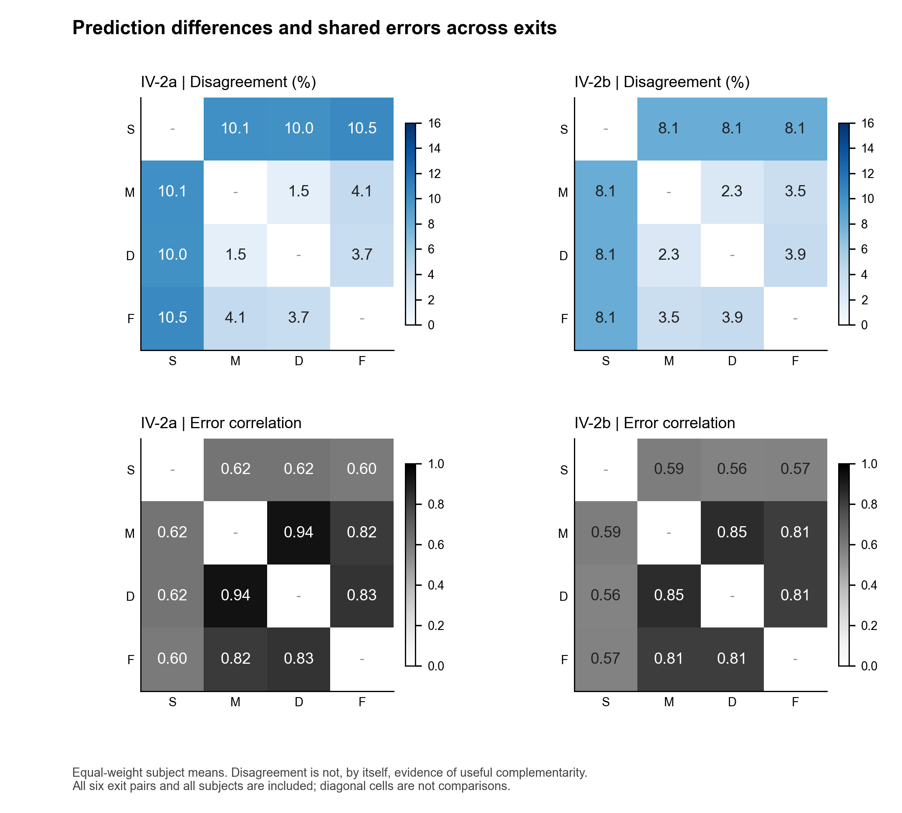

审稿补充分析预览
这是独立的图表与统计结果预览，没有修改论文或回复信。
先看结论
融合相较F在两个数据集上提高了平均准确率，并降低平均NLL和Brier。 IV-2a的ECE下降，IV-2b的ECE略升，因此不能写“所有校准指标均改善”。
IV-2a有8位被试提升、1位持平；IV-2b有6位提升、1位持平、2位下降。 相关分析按出口分别使用9对被试数据；56项比较做Holm校正后，0项达到P≤0.05。 相关结果不能单独确立试次级不确定性，也不能排除被试难度等共同影响。
| 数据集 | 输出 | 准确率 | ECE | NLL | Brier |
|---|---|---|---|---|---|
| IV-2a | S | 83.02% | 0.0657 | 0.4921 | 0.2539 |
| IV-2a | M | 86.38% | 0.0802 | 0.4893 | 0.2291 |
| IV-2a | D | 86.57% | 0.0821 | 0.4902 | 0.2280 |
| IV-2a | F | 86.00% | 0.0822 | 0.4877 | 0.2286 |
| IV-2a | Fusion | 87.04% | 0.0780 | 0.4697 | 0.2232 |
| IV-2b | S | 86.83% | 0.0537 | 0.3115 | 0.1917 |
| IV-2b | M | 89.38% | 0.0521 | 0.2820 | 0.1677 |
| IV-2b | D | 89.05% | 0.0565 | 0.2852 | 0.1698 |
| IV-2b | F | 89.76% | 0.0522 | 0.2816 | 0.1650 |
| IV-2b | Fusion | 89.99% | 0.0531 | 0.2734 | 0.1624 |
打开合并PDF图册 · 完整相关分析 · 逐被试指标 · 逐被试收益
1. 校准与分类性能表

校准与分类性能表。每项为9位被试各自指标的等权平均。ECE使用15个等宽置信度分箱；NLL使用真实硬标签和自然对数；Brier先在类别维度求和，再对试次取平均。浅色背景仅用于标识融合输出，不代表统计显著。2a与2b的类别数不同，不据此直接比较任务难度。
English caption
Calibration and discrimination. Each entry is the mean of nine subject-level metrics. ECE uses 15 equal-width top-confidence bins; NLL uses hard labels and natural logarithms; Brier is summed over classes before averaging over trials. Fusion rows are shaded only to identify the evaluated output, not to indicate statistical significance.
{kind=link}
2. F出口与融合输出的可靠性曲线及置信度分布

F出口与融合输出的可靠性曲线及置信度分布。每个数据集的测试试次在此图中合并，只作描述性展示；下排显示置信度分布，避免忽略稀疏分箱。对角线表示理想校准。这里没有置信区间，且合并试次后的ECE不等于校准表中按被试平均的ECE。
English caption
Reliability diagrams and confidence distributions for F and fusion. Test trials are pooled within each dataset for descriptive visualization; the lower panels expose bin support. The diagonal denotes perfect calibration. These pooled curves are not subject-level confidence intervals, and their ECE is distinct from the subject-averaged table values.
{kind=link}
3. IV-2a的全部5种输出，未选择性省略任何出口

IV-2a的全部5种输出，未选择性省略任何出口。图内明确标注的是合并试次后的Pooled ECE，不能直接替换表中按被试平均的ECE。
English caption
All five prediction outputs on IV-2a. Pooled ECE values are explicitly labeled and are not substituted for the subject-level mean calibration results.
{kind=link}
4. IV-2b的全部5种输出，未选择性省略任何出口

IV-2b的全部5种输出，未选择性省略任何出口。图内明确标注的是合并试次后的Pooled ECE，不能直接替换表中按被试平均的ECE。
English caption
All five prediction outputs on IV-2b. Pooled ECE values are explicitly labeled and are not substituted for the subject-level mean calibration results.
{kind=link}
5. 以被试为单位的出口相关分析

以被试为单位的出口相关分析。上3行为S/M/D实际使用的学习对数尺度，下4行为归一化融合权重。这些checkpoint中F没有独立学习的s参数，因此不构造s(F)。每项相关均使用9对被试数据，不是将全局权重重复到每个试次。P值使用全部9!配对排列的精确双侧检验，56项比较统一做Holm校正。带边框单元格表示校正后P≤0.05，本次为0/56项。s与误差指标正相关、w与误差指标负相关才与其可靠性解释方向一致；但相关性不等于因果机制或试次级不确定性，归一化权重还受固定先验和其他出口影响。
English caption
Exit-wise association across nine subjects. The upper rows show the effective clamped learned log-scales for S, M and D; the lower rows show normalized fusion weights. F has no separately learned log-scale in these checkpoints. Each association uses nine subject-level pairs. Exact permutation tests enumerate all 9! pairings using absolute Spearman correlation as the two-sided statistic. Holm adjustment covers all 56 tests. Outlined cells pass adjusted P <= 0.05 (0/56). A positive log-scale association or a negative weight association is directionally consistent with the reliability interpretation; neither establishes causality or sample-level uncertainty. Normalized weights also depend on fixed priors and other exits.
{kind=link}
6. 每个数据集9位被试的配对准确率变化，全部被试均保留

每个数据集9位被试的配对准确率变化，全部被试均保留。每条柱代表一位被试，不是均值柱，所以不添加误差线。参照为同一多出口模型的F出口。IV-2a有8人提升、1人持平；IV-2b有6人提升、1人持平、2人下降。纠正错误与新增错误的数量保留在配套表格中。
English caption
Paired changes in accuracy for all nine subjects per dataset. Bars show individual subjects, not averages with omitted error bars. The reference is the final exit of the same fitted multi-exit model. IV-2a has eight improvements and one tie; IV-2b has six improvements, one tie and two decreases. Corrections and newly introduced errors are retained in the source table.
{kind=link}
7. 学习对数尺度与错误率相关性的原始散点

学习对数尺度与错误率相关性的原始散点。两数据集、三个辅助出口全部展示，不只挑选最强相关。数字表示被试编号。这里展示的是秩相关，且属于探索性分析，因此没有强行拟合直线，也不能据此直接推断不确定性的生理或因果来源。
English caption
Raw subject-level points underlying log-scale/error-rate correlations. All auxiliary exits and both datasets are shown without selecting the strongest associations. Labels are subject IDs. A fitted regression line is omitted because the displayed statistic is a rank correlation and the evidence is exploratory.
{kind=link}
8. 各出口对的预测分歧比例及二元错误指示变量相关性，先在每位被试内计算，再等权平均

各出口对的预测分歧比例及二元错误指示变量相关性，先在每位被试内计算，再等权平均。它们说明出口预测存在差异及共享错误，但不能仅凭此证明某个训练模块产生了互补表征。所有出口对均展示，本次不存在因相关系数未定义而剔除被试的情况。
English caption
Mean subject-level prediction disagreement and correlation of binary error indicators for all exit pairs. These summaries describe differences and shared failures, not causal evidence that a particular training component created complementary representations. No undefined subject correlation was excluded.
{kind=link}
可回应的范围
校准表、可靠性曲线和权重相关分析可用于回应出口可靠性的质疑； 逐被试收益和共享错误分析可支持收益不一致与局限性讨论。 这里没有增加参数匹配训练、新方法对照、在线闭环或跨数据集迁移实验，也没有计算跨运行波动。
数值推理采用FP32。校准分析中未做额外温度校准或测试集拟合。 相关检验是探索性的，被试内的不同出口未当作相互独立的样本合并检验。